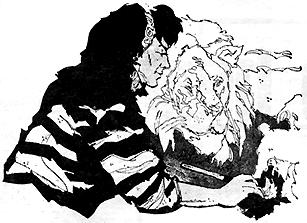

GEORGE SWETNAM
THE PITTSBURGH PRESS
Most artists have a feeling that their work is hampered by lack of opportunities to be shown, and by the very limited number of sales they are likely to make until they become famous. It's a vicious circle: You can't be famous without your work being seen, it seems.
The man in the street is likely to take the position that artists adopt an attitude that makes it embarrassing to ask their prices and then find them higher than anticipated.
They'd never get away with that criticism of Carolyn Thomas of Bethel Park. Both as official artist of the West Penn Kennel Club, and with portraits of people, she's a real horsetrader.
Many artists go a lifetime without ever getting a commission to do a mural. But she's done nearly a dozen, because people found out she was willing to talk trade, in terms they could afford.
One, for instance, is on the wall of a South Hills veterinarian's office. It did not cost him a cent in cash, but it has kept Mrs. Thomas in care and treatment of her numerous pets-which could become a considerable item in her budget.
She is not particularly concerned that she earns her daily bread working as a hostess at a downtown night spot.
"After all," Mrs. Thomas says, "I'm not by myself in having to depend on something besides my special field of art unless I want to go hungry. That happens to most artists, in one way or another.
"Many a commercial artist is a portrait or landscape painter at heart, or even, would like to spend all his time on pop, op, psychedelic or abstract things. I can't see much difference. Unless you're famous, or rich, or have someone to support you, you're likely to have to do something on the side to be able to devote yourself to art.
"Lots of artists teach, or work as decorators, or any number of other things outside or on the edge of their field in order to live. Why should I cry into my watercolors just because I have the same problem as other artists, better and not so good as I am?"
You won't often catch Carolyn crying, but you'll find her doing a lot of painting and sketching in various media at her home on Madison Avenue Extension. And if you started polling pet lovers who have exhibited in this area, you could find a surprising number of her pictures in circulation.
At pet shows she often does 30 or 40 "candid" charcoals of various pets in an afternoon. Some of them she sprays with fixatives and sells-or trades-while other owners get her to reproduce them in watercolors, oils or pastels. She often uses photos for these since it is very difficult to get dogs or cats to hold a pose.
"If anyone wants a picture and doesn't want to pay in cash," she says, "I can almost always work out some kind of swap. Maybe it is a pet or a piece of furniture. If I don't need or want it, I can always trade it off or sell it."
As a result, it might be that future collectors may find her one of the most prolific artists of our day, because where so much is produced, a good deal is likely to be preserved. Some day people may be digging her pictures out of attics, selling them for fantastic prices as antiques, and moralizing on the fact that she had to work at something else for a living.
Mrs. Thomas isn't at all concerned about that. She finds her work as a hostess pleasant, and the hours not too disturbing. In fact, she likes it.
"It's really delightful, the number and variety of people I have a chance to meet or observe," she says. "And it leaves me lots of time for painting." In order to have an excuse to paint, Mrs. Thomas will take practically anything in trade.
"Once a breeder of tropical fish traded me 55 fancy guppies for a portrait of her children. Later she got me to do sketches of her parents.
"I've traded paintings for almost anything, dogs, from poodles to police; cats, birds-name it and I've painted it and for it," she says.
One man traded her a lifetime supply of art paper for a family portrait. She made an artificial but very genuine-appearing tiger-skin rug, life size, out of polyester fiber, and traded it for $200 worth of driving school lessons, which she hasn't yet completed. A dog owner who makes museum reproductions traded her a life-like chameleon for a picture of his dog.
"I'd rather have the reproduction, because if you have a real one, you have to raise worms to feed it," she says, "and I don't think I'd like that. Now I'm doing him another picture for some undersea creatures."
One of Mrs. Thomas' fancier trades was a portrait for a Borzoi wolfhound. It was a male, which she didn't want, so she swapped him to a kennel as a stud, her pay to be one of his puppies. The deal finally ended with her getting a half-grown female of the same breed, which was what she wanted.
"Somehow," she says cheerfully, "whatever I trade for, I always come out with the best."
Carolyn has been painting pets for money, marbles or chalk, ever since her girlhood in New Castle. She was so much interested in cats during her studies at the Art Institute of Pittsburgh that her fellow students dubbed her "The Tiger Woman."
She enjoys painting pets and portraits especially because people are always so well pleased with them.
"Everybody loves portraits of themselves," she says, "except elderly women who want me to leave out their double chins. It's easy to correct that with a few strokes, and make them happy.
"Most people don't want to be made too glamorous, even if they aren't quite like Oliver Cromwell, who ordered an artist to paint him 'warts and all.' I did a portrait of one woman who had a very long lower jaw, and shortened it a little. She made me do it over because she said it was too pretty."
One of her more ambitious murals was commissioned by a woman who first wanted it to be of Isaiah's vision of peace, showing a lion lying down with a lamb at its feet. She liked it so well that she had its size extended to make room for some other wild animals, the woman and her daughter, and all their pets, living and dead.
Another was an Egyptian theme which she began for herself, as many of her friends insist she must have been reincarnated from Cleopatra or some other ancient queen of that country. A furniture dealer saw it and swapped her a new rug for it.
"I got a pug dog for painting pug faces on the handbags of two women who raised that breed," Mrs. Thomas recalls. "I swapped a fiber dog model for enough fine dog collars to last my pets quite a while."
It's hard to see how she could improve on such a record, but currently she's working on a deal that will prove she's entitled to recognition as a real horse-trader.
She's painted portraits of two very fine dogs for a man, and is now dickering with him on details for a mural, in return for a life-size model of a quarter-horse, to put in the front yard of her home.
|
 |
|
|